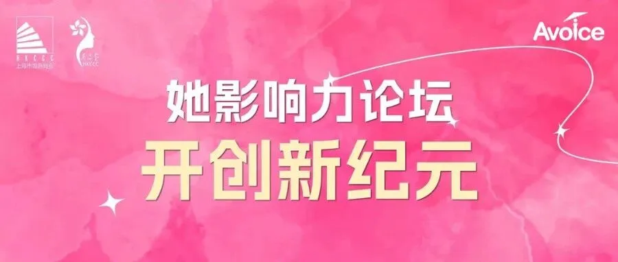
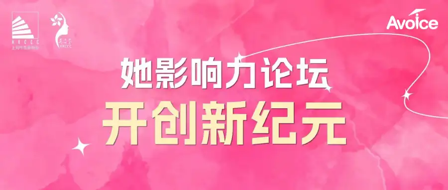
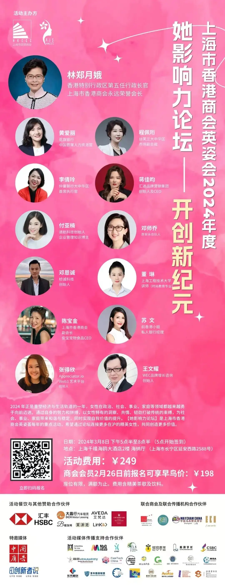
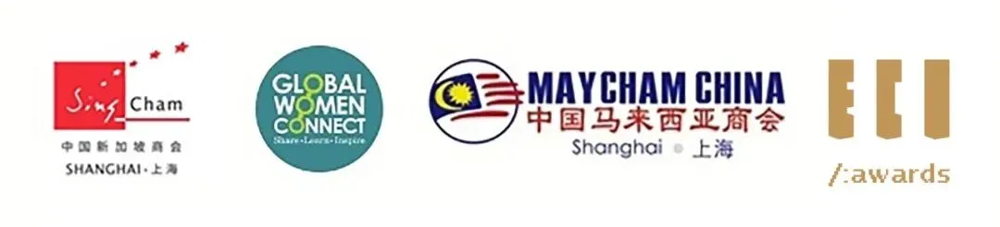
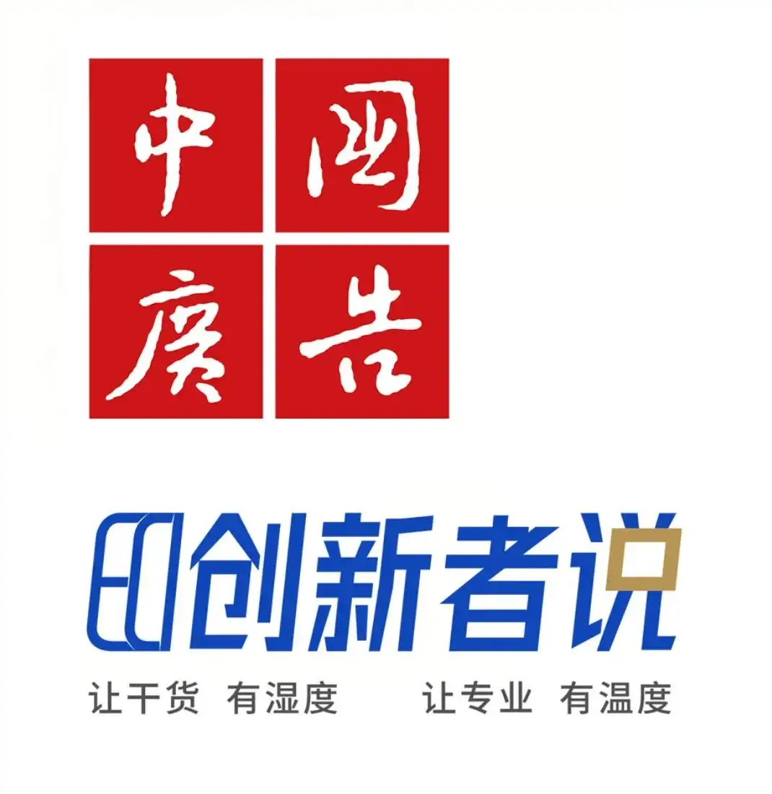
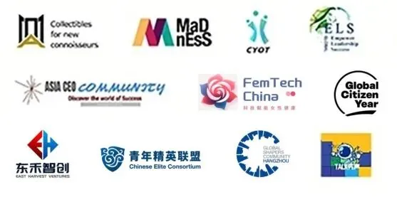
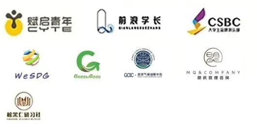
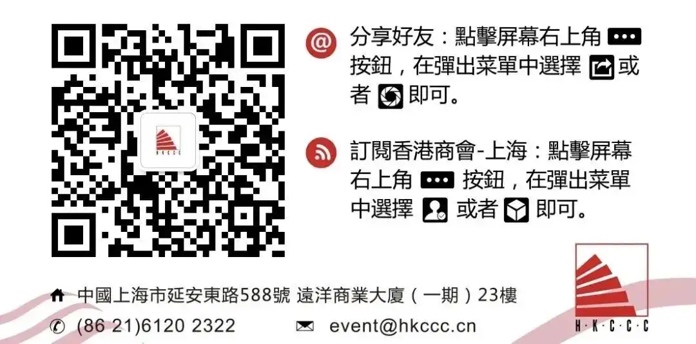

2024年正是重塑经济与生活轨道的一年，女性在政治、社会、事业、家庭等领域都越来越勇于向前迈进。通过自身的努力和拼搏，以女性特有的洞察、共情、韧劲打破传统的束缚，为社会、事业、家庭带来和谐与稳定，同时实现自我价值的提升。【她影响力论坛】是上海市香港商会英姿荟每年的重点活动，希望通过论坛连接更多在沪的香港精英女性，共同创造更多价值！
今年， “她影响力论坛-开创新纪元”将于3月8日下午5点在上海千禧海鸥大酒店举行，并特邀香港特别行政区第五任行政长官、上海市香港商会永远荣誉会长林郑月娥女士担任主旨演讲嘉宾，500强企业女性高管及青年企业家担任论坛嘉宾。我们诚挚邀请您的参与！

活 动 详 情
日期
2024年3月8日（星期五）
时间
17:30-20:30（17:00开始签到）
地点
上海千禧海鸥大酒店（延安西路2588号）
↓ ↓ ↓立即报名↓ ↓ ↓
2月26日或之前报名商会会员可享早鸟价¥198/位
（2月26日后价格¥249/位）
席位有限，以付款作为报名顺序，额满即止。
主旨演讲嘉宾
林郑月娥
香港特别行政区第五任行政长官
上海市香港商会永远荣誉会长
林郑月娥于一九八零年八月在香港大学毕业后加入香港政府政务职系，于二零零六年晋升至公务员体系内的最高职级，出任常任秘书长。二零零七年七月，她由时任行政长官提名，获中央人民政府任命为主要官员，担任发展局局长一职。二零一二年七月一日，她获委任为政务司司长。
林郑月娥的公职生涯长达四十二年，包括她担任香港特别行政区行政长官的五年任期。她先后在二十个公务岗位服务市民，所涉范畴涵盖财政、保安、社会福利、医疗卫生、地区行政、艺术体育、基建、规划地政等方面。
林郑月娥在二零一七年三月二十六日当选为香港特别行政区第五任行政长官，并于二零一七年三月三十一日获中央人民政府正式任命为第五任行政长官。她于二零一七年七月一日就职，在任期间带领香港渡过一段动荡时期，应对回归以来最严峻的挑战。
林郑月娥已婚，育有两子。
论坛嘉宾
黄爱丽Alice Wong
花旗银行中国首席人力资源官
黄爱丽Alice拥有超过 25 年的人力资源经验。她于2020年加入花旗，担任中国首席人力资源官，领导中国人力资源团队制定和执行人力资本战略，支持中国业务计划和集团战略方向并向企业领导层和董事会提供人才和组织方面的专业知识。
黄爱丽的第一份工作是普华永道的税务顾问，于 1998 年作为一名招聘人员正式开启了她的人力资源之旅。在加入花旗之前，她在安永工作了 14 年，并担任不同的人力资源领导职位，其中包括业务合作伙伴、DEI领导者，运营总监、招聘主管等，在安永的最后一个职位是大中华区的人力资源主管。
程佩珩Anita Ching
丝芙兰大中华区市场副总裁
程佩珩Anita，现职于丝芙兰，出任大中华区市场副总裁，负责丝芙兰品牌管理工作。属于LVMH集团的丝芙兰，进入中国19年，拥有逾340家门店以及多个线上平台，覆盖100城市，高端美妆会员逾2500万。通过全域营销，每天平均服务超过100万爱美的顾客。
毕业于香港中文大学，获取工商管理学士与硕士学位。程佩珩拥有超过27年市场营销及管理经验，包括品牌建设、产品开发、媒体传播、社交推广、会员运营、舆情公关、广告设计、视觉陈列等，专注于美妆、个护及营养品行业。曾任职于知名国际及本土企业，负责大中华区及亚太区市场业务。
李倩玲Bessie Lee
仲量联行大中华区首席执行官
李倩玲Bessie现任仲量联行大中华区首席执行官，常驻上海，领导仲量联行在大中华区的16家分公司及超过18,500名员工。她负责公司在大中华区的整体战略和业务运营，并专注于通过数字化转型和科技赋能更好的服务中资客户，推动业务的全新增长，提升公司科技产品的市场渗透率。
深耕大中华地区媒体传播行业长达三十余年，李倩玲先后供职于WPP集团旗下多家公司，并于2013-2017年间担任WPP集团中国区首席执行官，员工总数达14000名，公司年收入超过10亿美元。在加入仲量联行之前，她创办并运营一家风险投资机构碚曦投资协作体，专注于营销科技领域的新兴企业孵化和早期风险投资。
蒋佳昀
汇迦品牌营销管理集团创始人及CEO
蒋佳昀拥有18年+营销及电商行业经验， 曾任职国际知名品牌如斯凯奇，她是斯凯奇中国前电商營銷部负责人，此外佳昀也于行业领先服务商工作多年，拥有丰富的经验。她是一名创业者，目前集团人数达70人，同时她也是一位全能型妈妈。除了国内电商运营丰富经验外，她也拥有5年海外及国内创业经验，精通整合营销、数字营销，是行业专家。曾多次获得金投赏、金鼠标等业界奖项。
青年嘉宾
付亚楠Alma
递航科技创始人/企业管理知识博主（10W+企业主粉丝）
付亚楠Alma14年网络招聘行业经验，曾参与两家招聘平台从零到上市的创业过程。全面负责过业务、产研、运营等模块。连续多次获得全国冠军，创造出全行业人效第一的成绩。链接超过5万家企业雇主和4000万中高端职场人士。
董琳Lynne
讲师（时尚教育）/上海工程技术大学SUES
董琳曾担任芭比品牌创意设计活动策划及设计导师，并于2022互联网+创新创业大赛指导教师获奖。
邓恩诚Enoch
桢诚科技创始人
邓恩诚超过10年科技和营销经验，擅长引领企业数字化和AI转型，增强市场竞争力。
苏文Susan Su
北大国际关系学院和经济中心双学位
前国际顶级投行高管
前香港小姐 (获“最佳珠宝演绎奖”)
嘉宾主持
陈宝金Beatrice Chan
上海市香港商会副会长、俊宝宠物食品CEO
陈宝金为上海市香港商会副会长，国际食品企业大中华区CEO （俊宝, JDE, 达能集团等)，B姐饭局创始人，香港大学上海校友会会长，20多年企业管理，营销策略，并购重组等经验。
王文耀Kenny Wong
WEC品牌增长咨询、DTC品牌增长专家
王文耀Kenny23年DTC品牌战略策划以及营销创新经验。近年专注中国品牌出海战略，补充海外“消费者深度洞察”和DTC(Direct-to-consumer)品牌战略来解决客户的营销盲点，转创意为生意。
张得欣 Emily Cheung
Web 3.0艺术科技公司Appreciator.io 创始人&CEO
赏游地文旅科技平台创始人&CEO
文化出海策略咨询公司CREATEC联合创始人&CGO
荷兰梵高文化遗产基金会的首位亚太区股东
G20YEA-20国青年企业家联盟中国区成员
联合国发展处UNDP中欧TOP50企业家
ECI ARTECH组委会执行秘书长
祖苗青年国际交流计划副秘书长
全球多个国家创新论坛及会议演讲嘉宾
中国广告主协会品牌出海工作委员会常务理事
华苑彤Jenny Wah
连阁文化传播创始人
90后，土生土长香港人，于复旦大学修读市场营销本科；2018年创业成立连阁文化传播，致力以创新与创意协助国外品牌进入中国市场的全方位推广，协助中国品牌及企业出海，连通世界，说好中国故事。
活动餐饮与其他赞助合作伙伴
联合商会及联合传播机构合作伙伴

特邀媒体

活动媒体传播支持合作伙伴


